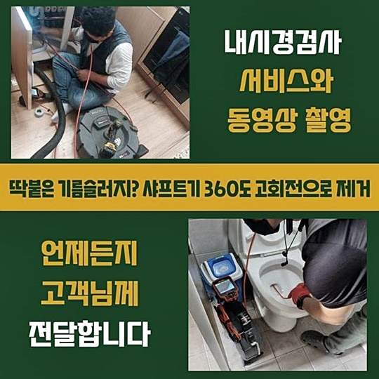
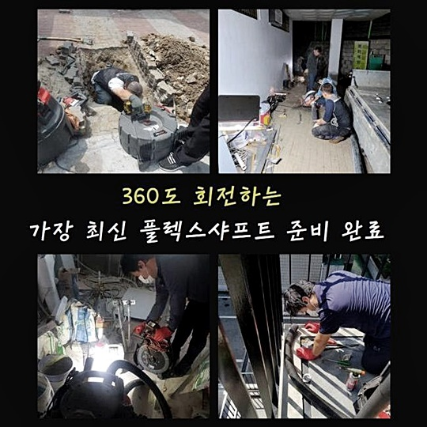
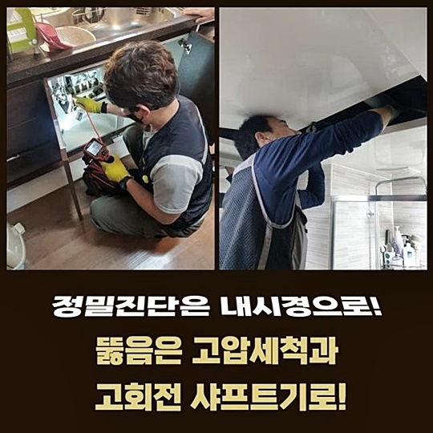
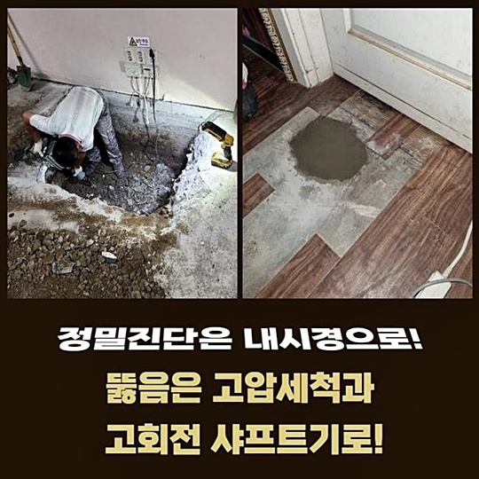
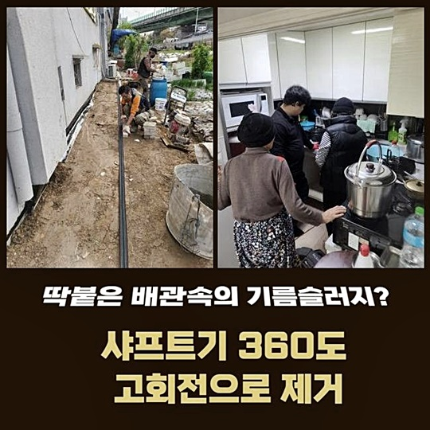
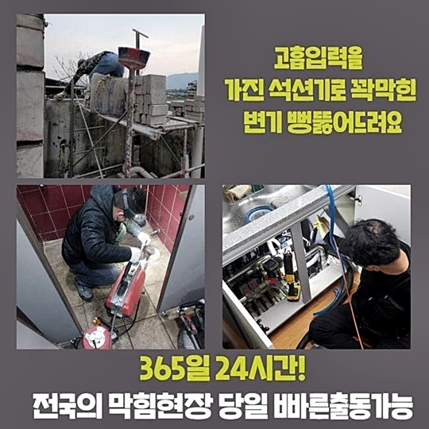
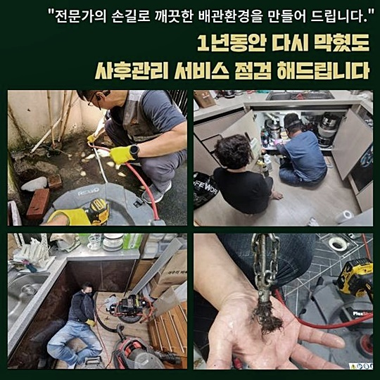

🏠 천안 청당동대변기막힘 구룡동 냄새차단 설비업체
용인시 처인구 배관막힘 전문 시공 후기

📋 작업 개요
- 위치: 용인시 처인구, 수원시 영통구, 화성시 동탄
- 서비스 유형: 배관막힘, 하수구청소, 누수수리, 고압세척, 내시경점검
- 작업 일시:
- 업체명: 하수구수사대 (010-5615-2118)
🔍 문제 상황
천안 청당동대변기막힘 구룡동 냄새차단 설비업체
막힘증세와 관련해 현장사례들로 설명드릴테니 자세하게 살피시면 많은정보를 얻으실수있어요!
작업사례중 씽크대쪽에서 배관막힘현상이 발현된경우가 있었죠
싱크대는주로 기름기가 쌓여서 막힘이 발생하게되는데 저희들은 배관안쪽을 확실하게점검해 정확하게 원인이무엇인지 살피고 처리해드리고있죠
이번장소를 들여다보니 좋지못한 냄새까지 발현되고있었을 뿐아니라 물을이용하는것도 어려웠는데요
이런경우엔 하수관에 이물이쌓여 배수가 정상적이지 못한걸로 보였답니다
막히는문제들을 조속하게 처리해드리기위하여 심혈을기울여서 수리를 착수하고있어요
세척작업으로 하수구문제를 바로잡고 불편하셨던것들을 타파시켜드리도록 하겠습니다
고압세척기는 고압수로 물을쏴서 오염물질을 없애기때문에 세심한 하수구청소가 가능하답니다
오염물질의 양이상당한 하수관을 깔끔하게 세척시키기위해 활용되는데 앞서말씀드린 장비의경우 배수관환경에서 발생할수있는 정체현상들을 처리시키는데 효과적이에요
하수구세척을 진행하게될때 주변환경이 보존될수있도록 대형비닐로 훼손이나지않게 방지하고있어요
최첨단장비들로 배관성능이 문제없도록 만들고 안전하게 사용되는데까지 기여해내고있어요
배관의경우 각자다른 위치로 자리잡고있으나 전부 연결되어있기에 배관막힘이 많이일어납니다

🔎 원인 분석
💡 전문가 진단: 정밀 진단 장비를 사용하여 슬러지의 고착 여부를 판명하고 타격/세척 작업을 실시했습니다.
배관주위를 살펴보니 샤워용품찌꺼기와 머리카락등등 이물들이 퇴적된상태임을 살펴볼수있었죠
이런상황이면 내시경기계를 활용하여 세밀한 검수과정이 필요하겠습니다
공용관은 하수구통로가 일부로 확보가된 상황이지만 공간이부족해 배수상태에 피해를끼치고 있었네요
전체검사를 거쳐보니 간단히 잔해물을 제거시키는 장비보단 고압세척기가 효율을 크게볼수가 있을것으로 판단할수있었네요
고객분의 협조에따라 신속하게 세척을 시작할수있었죠
내시경을이용해 하수도안쪽을 확실히 살펴볼수있어요
오염물로인해 하수도가 막혔다면 스케일링과정이 필수라고 할수있죠
세척하는작업을 올바르게 진행하지못하면 하수도내부에 기스가생기며 결국엔 2차피해가 일어날수있죠
저희들의경우 오래된경험을 가지고있는 전문기사들이 현장을 방문하여 검수를 진행하기때문에 하수구에 손상이생길까봐 염려는 접어두셔도 괜찮아요
석션장비는 이물을흡입해 제거시키는 역할을해요
석션과정으로 하수구속에 자리잡고있는 이물을 제거시키고 문제가무엇인지 간략하게 알아낼수있어요
샤프트기는 오염물을 분해시키는 역할과 주로 고착물질들을 분쇄시키는데 이용된답니다
이후엔 내시경검수를 거쳐서 안쪽상황이 어떤지 체크하여 적절히 조치할예정이죠

🔧 작업 과정
내시경장비로 진행하는과정은 막혀있는이유를 파악하려면 꼭 진행해야할 사항입니다
내시경검수결과 막힘문제가 일어난것이 잔해물질들이 배관안에 퇴적되어 막혀버렸다는것을 알아낼수가 있었습니다
내시경장비끝에 작은촬영기가 설치되어있기에 사람의눈으로 살펴볼수없는 내부지점에 활용하고있어요
막혀있는지점과 오염물의형태를 자세하게 파악이가능해요
점검과정을 통해서 수립계획을 정하는데있어 도움이됩니다
그러므로 막힘이 일어났을땐 내시경기기를 활용해 정확하게 점검해보는것이 중요한거랍니다
오염물을 없애기위해 스케일링장비를 활용하여 하수구에서 발현된문제를 처리하려고해요
앞에 말했지만 샤프트장비노즐 끝쪽에 달려있는사슬이 빙빙돌며 내부깊은곳의 고착물질들을 분쇄해준답니다
저흰 작업내용들을 투명히공개해 고객분들께서 작업방식의 내용을 이해하시고 신뢰를 하실수있도록 노력하고있어요
배관을뚫을때 전문지식을 갖추고있지 않다면 되려배수구에 손상문제를 일으킬수있기에 조심해주셔야해요
전문인에게 맡겨보면 별걱정없이 노하우를통하여 문제를타파하면 누수우려없이 해결되실겁니다
두번째장소는 욕실배관에 문제가나타난 장소에내방했죠
이현장도 오염물질들로 인해서 막힘을 유발시킨 현장이었죠
분해전용장비 샤프트기를 사용하기로 결정하고 작업에임했죠
퀴퀴한냄새도 동반하고있는 상태이므로 하수구물길을 확보하여 뚫는작업에 착수해보기로 했답니다
이를통하여 빠르고효과적인 작업과정이 착수될것을 고대할수있었죠
장시간 많은잔해물이 하수관안에 쌓이게되면서 막힘이 일어난것을 파악했죠
여러번 말했지만 전문기술이 없을경우 어떤문제로인해 막히게된건지 알아내기란 어렵습니다
그러므로 저희같이 전문업체의 도움을 받아보셔야해요
신속정확히 문제를해결해 쾌적한환경으로 제공해드릴것을 약속할게요
재발하는일이 발현되지않게 예방조치까지 진행해보도록 할게요!


✅ 작업 완료
고객만족을 우선시하는 과정으로 진행할테니 염려마세요!
완벽한 하수구상태로 만들어드리기위해 최선을다하여 시공에임할게요
조치를취하지않고 방치한다면 또다른피해가 일어날수있사오니 문제발견즉시 대처를취하세요!
어떤곳이라도 60분내로 도착이가능하고 최첨단기계까지 보유하고있으니 언제라도 전화만주시면 되겠습니다
이것말고도 궁금하신게 있으시면 마음편히 전화주신다면 상세하게 상담진행하도록 할게요!
앞으로일어날 막힘문제 저희들과함께 헤쳐나가봐요!




⚠️ 하수구 배관 막힘 예방 및 관리 가이드
- ✅ 머리카락, 비닐, 물티슈 등 물에 분해되지 않는 이물질은 절대 흘려보내지 마세요.
- ✅ 기름기 많은 식기는 설거지 전 키친타올로 먼저 기름때를 닦아내세요.
- ✅ 주기적으로 배수구에 뜨거운 물을 가득 부어주어 유지방 고착을 방지하세요.
- ✅ 작업 후 1년 이내 재발 시 무상 A/S 보증 서비스를 제공합니다.
💡 핵심 정리
- 확실한 장비 작업(내시경 점검 및 샤프트 스케일링)으로 원인을 뿌리 뽑습니다.
- 작업 후 1년 이내에 동일한 부위 재발 시 100% 무상 A/S 서비스를 보장합니다.
- 서울 · 경기 · 인천 전 지역에 24시간 언제든 긴급 출동할 수 있도록 항시 대기 중입니다.
❓ 자주 묻는 질문 (FAQ)
🚨 용인시 처인구 배관막힘 문제로 고민이신가요?
정확한 원인 진단과 확실한 시공으로 재발 없는 해결을 약속드립니다.
24시간 긴급 출동 | 서울 · 경기 · 인천 전지역 | 1년 내 재발 시 무상 A/S